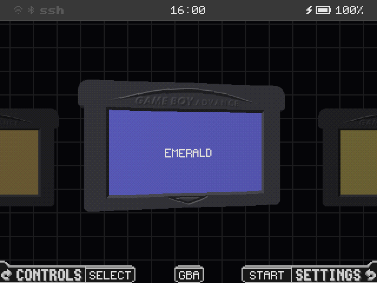
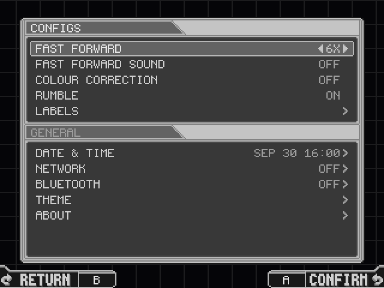
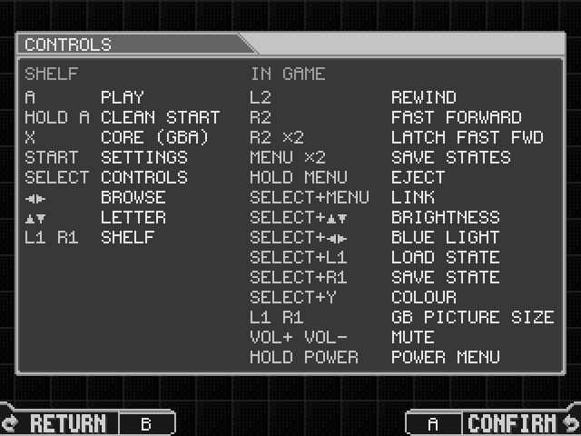
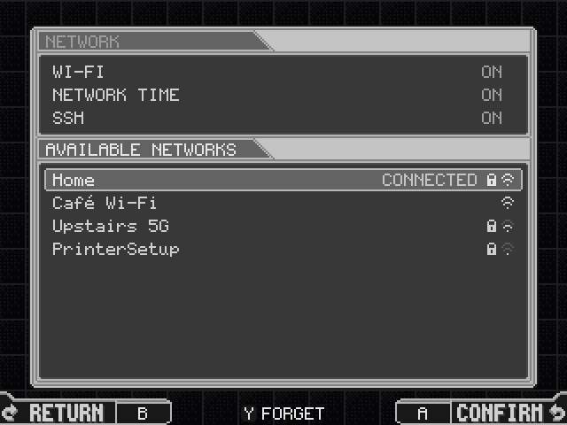
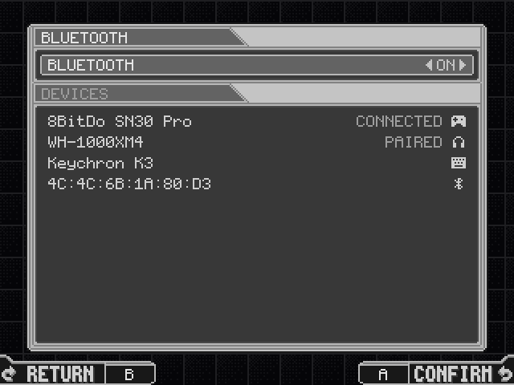
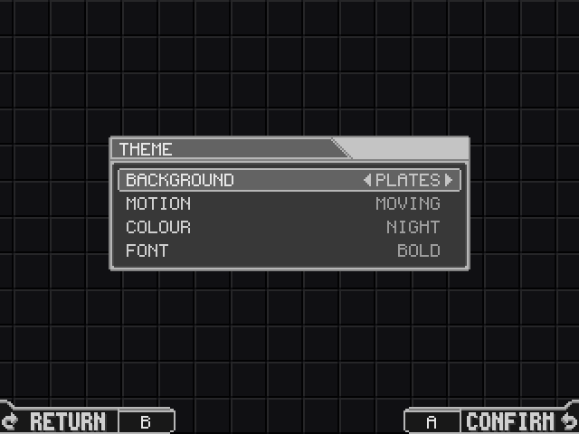
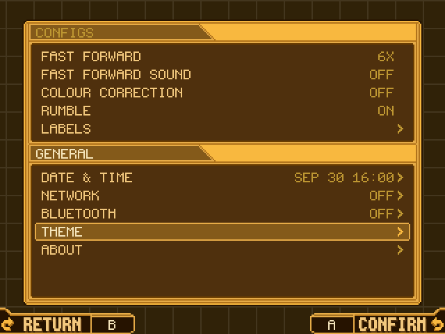
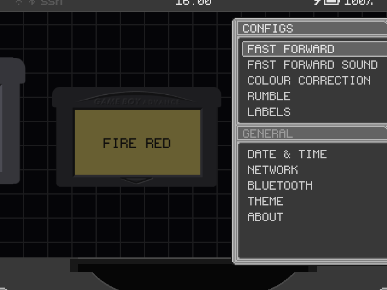

Screens










Theme
The menus take their colours from the background's, and so does this page. Pick a row and change it with Left and Right, as on the handheld: Amber is Mega Man Zero's own colours, Night plain greys.
The page drifts like the shelf unless your system asks for less motion.
Highlights
The shelf
Solid carts in their own plastics with real label scans. The one you are on floats and sways, and slides into the slot at full size. The boot logo fades into it.
Two GBA cores
mGBA and gpSP, chosen per cart. GBA fills a 640x480 screen; Game Boy stays at 3x.
Pick up, rewind
Resume on boot, save states with a switcher, rewind, fast-forward, turbo buttons.
Link play
Two handhelds over Wi-Fi, for Pokémon trades, Advance Wars, Mario Kart and Tetris.
Settings
On START, in windows in the style of Mega Man Zero's menus that slide from screen to screen.
Controls
A tap of SELECT lists what every button does, on the shelf and in a game.
Network
Home Wi-Fi with SSH and SFTP, switched ON and OFF, and INFO with the login and root's own random password. Network time, and cart labels from ScreenScraper.
Bluetooth
On handhelds that have it: pair a device and connect it, forget it. Game sound and gamepads over Bluetooth are still to come.
Theme
A pixel font, and a background you choose, whose colour the menus, both bars and the slot take.
Supported devices
One build runs on all of them: omega-zero reads the model from BaseOS at boot and lays itself out for its panel.
The RG35XX SP is the main target, in daily use. The RG SP is supported, not yet retested on hardware. The RG28XX's panel is mounted turned, and omega-zero turns it back.
Own an untested one? A device report is the most useful thing you can send.
Quick start
- Write the BaseOS image for your model to a microSD card, put it in SD1 and boot once.
- Copy the contents of the latest release to the root of that card.
- Put your games in Games/GBA, Games/GB and Games/GBC.
- Boot. On the shelf, START opens Settings and a tap of SELECT shows every button.
Games/GBA/ your GBA games Games/GB/ your Game Boy games Games/GBC/ your Game Boy Color games Labels/ cart labels Overlays/ your own overlays Saves/ saves States/ save states System/ omega-zero itself
Two cards, updating, controls and everything else are in the wiki.
Credits and licence
- omega-zero is based on slot by Brandon T. Kowalski, released under the GPL-3.0: the shelf, the carts, their sounds and much of the code began there, and have been modified since October 2026.
- BaseOS by pvaibhav.
- Emulation by mGBA (MPL-2.0) and gpSP (GPL-2.0). Their licences, patches and gpSP's source ship in System/licenses/.
- Type is Pixel Code by Qwerasd (SIL OFL 1.1) and the Nerd Fonts symbols. The LCD mask is derived from GigaHerz's LCD3x.
- Cart labels come from ScreenScraper, fetched with your own account.
omega-zero is free software under the GPL-3.0-or-later. It is written with Claude, and reviewed and tested by its maintainer. This page is drawn with its UI kit.
Game Boy, Game Boy Color and Game Boy Advance are trademarks of Nintendo. Anbernic is a trademark of its owner. This project is not affiliated with either.